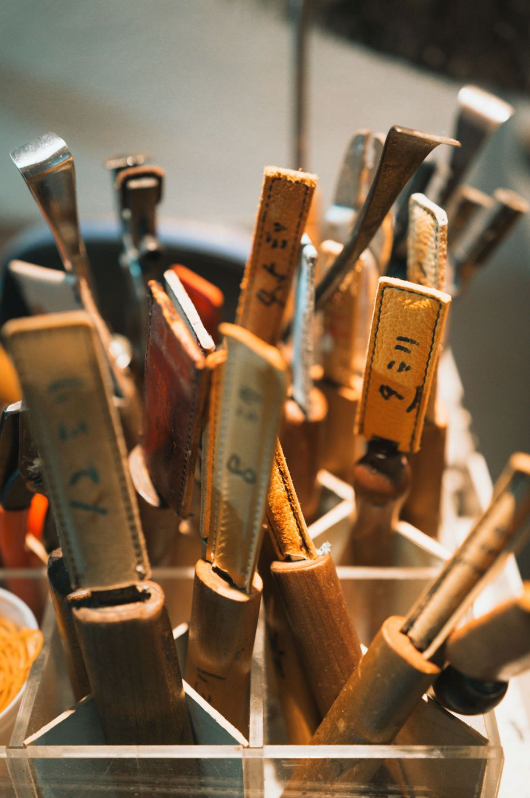
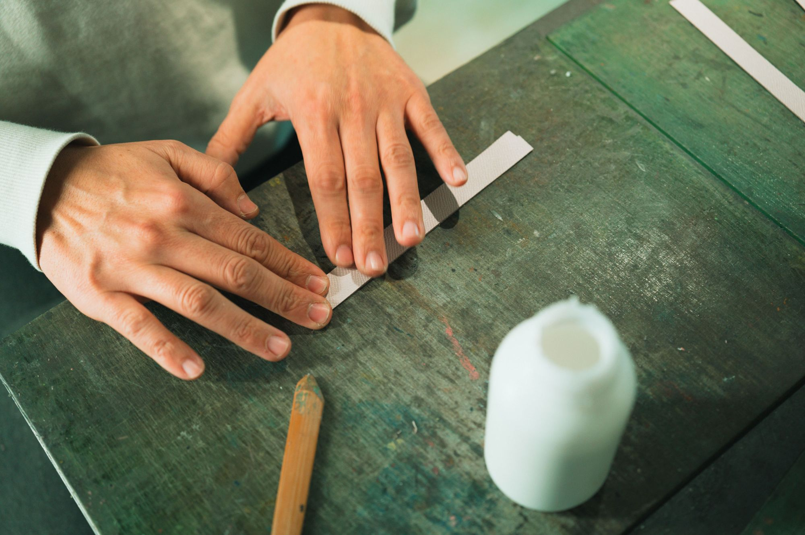
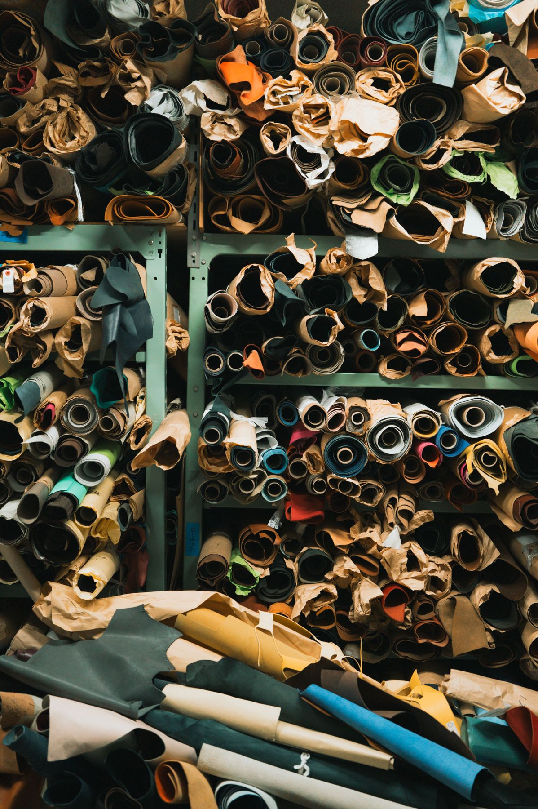

01
企画・設計のご相談
生産する物・展開時期・ロット数などをうかがい、イメージを具体化します。デザインの提案や、製造上のアドバイスもいたします。
トップ / 私たちのできること
WORK · OEM
野村製作所は、ブランドやメーカーの皆さまの「こんなものを作りたい」を革小物のかたちにするOEMメーカーです。企画のご相談からサンプル、量産、検品まで、一貫してお受けします。

What we do

01
生産する物・展開時期・ロット数などをうかがい、イメージを具体化します。デザインの提案や、製造上のアドバイスもいたします。

02
打ち合わせで決めたイメージをもとに、自社のサンプル室でていねいに製作。複数素材・複数デザインも出せます。細かな修正・調整にも対応します。
03
完成したサンプルをもとに、国内の自社工房または海外の協力工場で量産。国内・海外とも、自社の専門スタッフが検品します。
Our capacity
分業が主流の革業界では珍しく、社内に職人を抱え、企画から生産まで一貫して手がけています。職人は「小物技術認定（皮革部門）試験」の一級保持者。東上野の自社工房と海外の協力工場から、数量や時期に合わせて作る場所を選べます。
DOMESTIC
専属職人25人。月間 約8,500個。サンプルと同じ職人の手で、細かな仕様まで仕上げます。
OVERSEAS
月間 約50,000個。まとまった数量のご依頼に。検品は自社の専門スタッフが行います。
会社データ：創業103年／社員数20名（パート含む）確認：数字は現行サイトの表記。最新の値
Items
革袋物製品を中心に、ブランドの定番品からノベルティまで。
上記以外のものも、まずはご相談ください。
Process
お問い合わせフォームまたはお電話でご連絡ください。生産する物、展開時期、ロット数などをお伝えいただけるとスムーズです。未定の部分があってもかまいません。相談しながら決めていきましょう。
お聞かせいただいたお話をもとに、イメージを具体化していきます。デザインの提案、製造上のアドバイスなども行います。

弊社サンプル室で、ていねいにサンプル品を製作します。必要に応じて複数素材・複数デザインも製作。お客様にご納得いただけるまで、とことん対応します。
完成したサンプル品をもとに、国内または海外で量産します。
国内・海外生産の製品ともに、弊社の専門スタッフが検品を行い、お届けします。
確認：工程ごとの写真を撮り足すか
FAQ
はい。生産する物・展開時期・ロット数などをお伝えいただけるとスムーズですが、未定の部分があってもかまいません。相談しながら決めていきましょう。
お聞かせいただいたイメージをもとに、デザインの提案や製造上のアドバイスを行います。
必要に応じて、複数素材・複数デザインのサンプルを製作します。細かな修正・調整にも対応します。
小ロットから量産まで、ご相談ください。確認：最小ロット・納期の目安を書くか
国内の自社工房のほか、海外の協力工場（2社）で量産できます。検品は国内・海外とも自社の専門スタッフが行います。
Works
MUSEUM
ミュージアムグッズ
確認：掲載の許可RAILWAY
パスケース ほか
確認：掲載の許可CHARACTER
キャラクターグッズ
確認：掲載の許可RESTAURANT
コラボグッズ（社名は非公開）
確認：掲載の許可Contact
OEMのご相談、コラボレーション、取材・撮影協力、採用など、お気軽にご連絡ください。